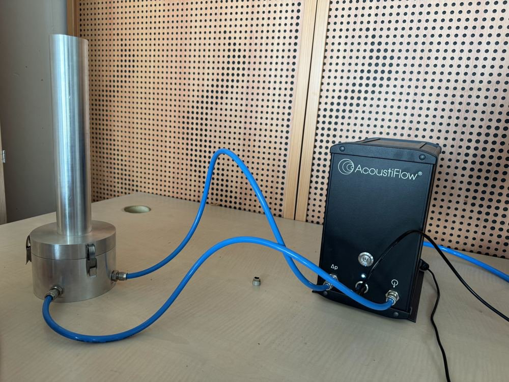
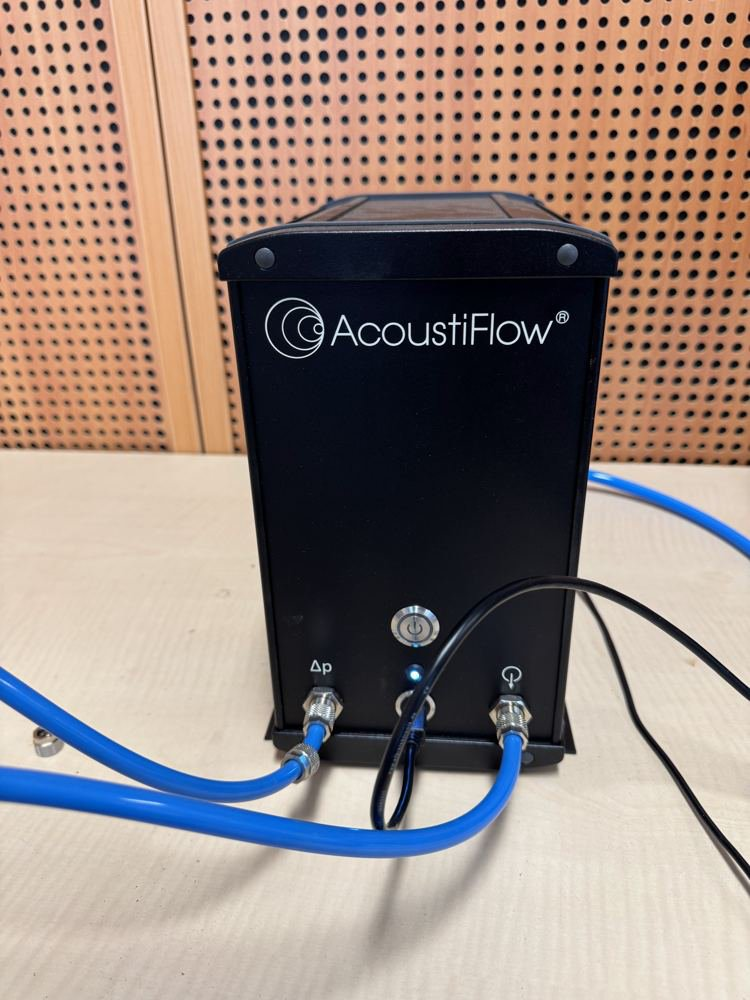
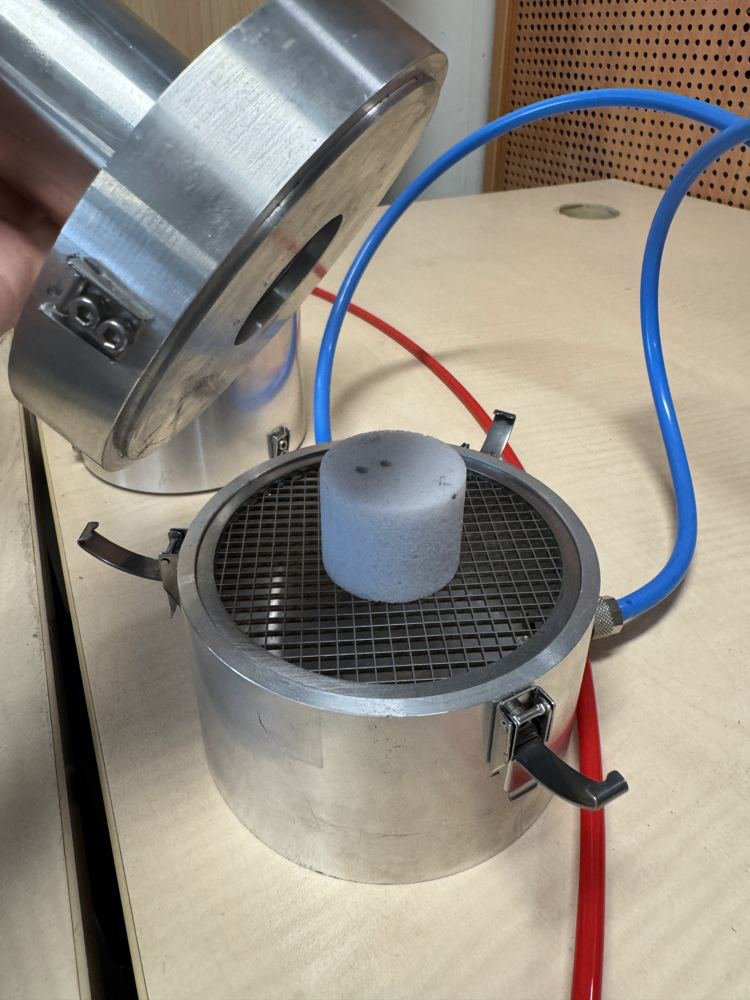
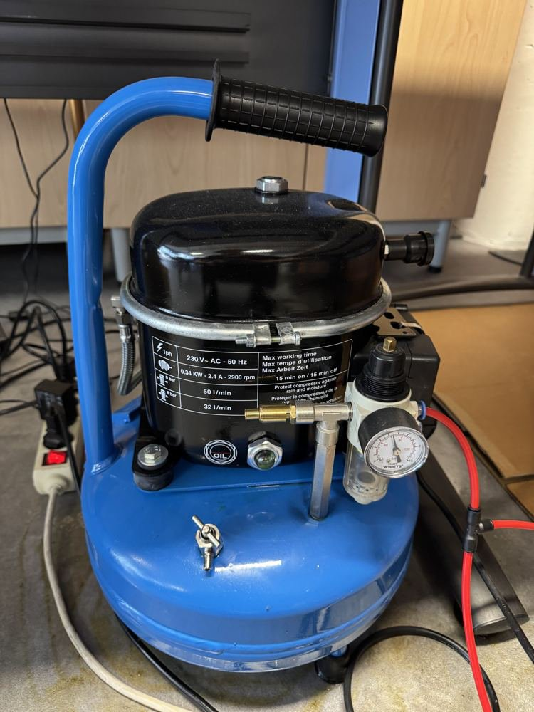
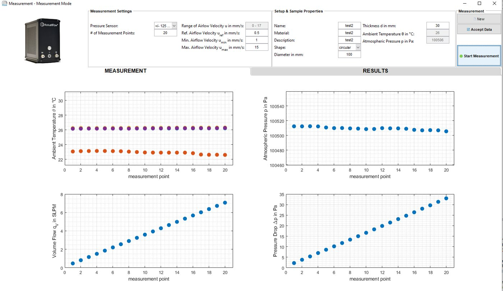

Banc d'essais · Laboratoire MSME (UMR 8208 CNRS), Université Gustave Eiffel · 2026
Banc de résistivité statique au passage de l'air
ISO 9053-1Loi de DarcyAcoustiFlowMesure sur deux faces

Résumé
Un écoulement d'air laminaire, lent et parfaitement maîtrisé traverse l'échantillon et l'on mesure la différence de pression entre ses deux faces : plus le matériau « freine » l'air, plus sa résistivité σ est grande. Avec la porosité ouverte, σ est l'un des deux paramètres de premier ordre nécessaires pour identifier les modèles de milieux poreux à partir des mesures au tube d'impédance.
J'ai rédigé le cahier de laboratoire de 36 pages (version 2.1) : théorie, résistivimètre AcoustiFlow et son compresseur, les deux géométries d'échantillon, la procédure (face A puis face B), les contrôles de résultat et l'exploitation dans le logiciel de caractérisation RoKCell.
Côté expérimental
Le cahier insiste sur ce qui rend la valeur fiable : rester dans le régime de Darcy (perte de charge proportionnelle à la vitesse), mesurer à plusieurs vitesses et ramener le résultat à la vitesse de référence de 0,5 mm/s de la norme, relever température et pression (la viscosité de l'air varie d'environ 0,3 % par °C), mesurer les deux faces de chaque échantillon et recouper σ avec l'estimation tirée des mesures acoustiques.
Méthode et équations
La norme ISO 9053-1 définit trois grandeurs emboîtées pour un échantillon d'épaisseur \(e\) et de section \(S\), traversé par un débit \(Q\) (vitesse \(v=Q/S\)) avec une perte de charge \(\Delta P\) :
$$R=\frac{\Delta P}{Q},\qquad R_s=R\,S=\frac{\Delta P}{v},\qquad \sigma=\frac{R_s}{e}=\frac{\Delta P}{v\,e}\quad[\mathrm{N\,s\,m^{-4}}]$$À très faible vitesse, l'écoulement suit la loi de Darcy ; σ est liée à la perméabilité visqueuse statique \(k_0\), grandeur réellement intrinsèque (\(\eta\approx1{,}8\times10^{-5}\) Pa·s pour l'air) :
$$\mathbf{v}=-\frac{k_0}{\eta}\,\nabla P\quad\Longrightarrow\quad\frac{\Delta P}{e}=\sigma\,v,\qquad \sigma=\frac{\eta}{k_0}$$Figures








